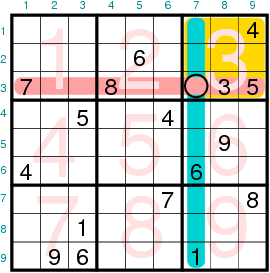

Solving sudokus with GNU Octave (I)
By Víctor Luaña and Alberto Otero-de-la-Roza
I. Introduction
GNU Octave is a high level language designed for science and engineering applications. Easy to learn and simple to teach, Octave can be used as a sophisticated interactive graphical calculator. On the other hand, the rich set of data structures (complex numbers, vectors, matrices, multidimensional arrays, strings, lists, function handles, cell arrays, ...) and, in particular, the complete collection of matrix operations and functions give Octave enough punch to be used in professional applications. From a programmer's point of view, the interface of Octave functions is superb. Incidentally, Octave is highly compatible in notation and functionality with MatLab, a leading instrument in many engineer's toolbox.
The intention of this article is to show the matrix capabilities of the language by analyzing the solution of arbitrary 9x9 classical sudokus. A primitive code, combining simple scan and brute force trial-and-error guessing will be discussed. More advanced solving techniques will be the subject of a future installment.
II. Matrix operations
Before going on to the sudoku problem, it may be useful to discuss a few ideas about the language matrix capabilities. First of all, Octave matrices can be defined and addressed element by element, but it is far more efficient to handle them as a whole using the rich set of operations and functions that the language provides. Compare, for instance, the following code for defining and multiplying two 100x100 random matrices element by element:
tstart = cputime; # Start timing
rand("seed",pi); # Initialize random number to a known seed
for i = 1:100 # Fill up the two 100x100 random matrices
for j = 1:100
A(i,j) = rand();
endfor
endfor
for i = 1:100
for j = 1:100
B(i,j) = rand();
endfor
endfor
for i = 1:100 # Multiply the matrices
for j = 1:100
C(i,j) = 0;
for k = 1:100
C(i,j) += A(i,k) * B(k,j);
endfor
endfor
endfor
Sum = 0; # The sum of all elements in C
for i = 1:100
for j = 1:100
Sum += C(i,j);
endfor
endfor
disp(Sum);
tend = cputime() - tstart;
disp(tend);
with the equivalent code using matrices at once
tstart = cputime; # Start timing
rand("seed",pi); # Initialize random number to a known seed
A = rand(100); # Fill up the two 100x100 random matrices
B = rand(100);
C = A * B; # Multiply the matrices
Sum = sum(sum(C)); # The sum of all elements in C
# The inner sum() returns the sum of each column
disp(Sum);
tend = cputime() - tstart;
disp(tend);
The matrix code is shorter, simpler, and some 2500 times faster (0.024 seconds compared to 58.8 seconds, on a typical 2.4 GHz Pentium). The main reason for this huge CPU time difference lies in the fact Octave is an interpreted language, so while loops must be parsed, interpreted, and performed once per cycle, matrix operations are transformed at once into fast machine code able to exploit the vector capabilities of the CPU.
Addressing parts of a matrix is simple with Octave. The i-th row and the j-th column of M are invoked as M(i,:) and M(:,j), respectively; M(i:i+3,j:j+3) slices a 4x4 block that starts at the M(i,j) element; M(2:2:,1:2:) slices all elements that belong to an even row and an odd column; and M(find(M>0)) returns a vector made of all elements in M that are positive. More matrix magic can be done by using address indices.
As a final remark on the specifics of Octave matrices, the elements are stored in column-major order (i.e. Fortran-like order, with M(1,1) being followed by M(2,1), M(3,1), etc.), and the starting value for the indices is 1 by default. As a default, a two-dimensional matrix can also be addressed as a one dimensional vector but if that appears a little confussing, the reshape() function can be used to explicitly change the matrix dimensions.
III. The first sudoku solver
A classical sudoku is a 9x9 matrix formed by nine 3x3 blocks. The 0-9 digits fill the 81 matrix cells in such a way that each digit appears exactly once in each row, each column, and each block. In fact, the name sudoku comes from the Japanese phrase "suuji wa dokushin ni kagiru" ("the numbers must occur only once") that was used by the Nicoli publishing house. Starting from a blank matrix, there are 6,670,903,752,021,072,936,960 different possibilities (Felgenhauer and Jarvis, 2005), that reduce to 5,472,730,538 unique sequences when all puzzle symmetries are taken into account (Russell and Jarvis, 2005). The mathematical enumeration becomes an interesting logical mind game when a few clues or given digits are added at selected places in the matrix. In the sudoku jargon, a proper puzzle has a unique solution, whereas a satisfactory puzzle is proper and can be solved without trial and error.
Two different types of methods have been applied in solving sudokus by computer. The first kind of programs try to follow the same or similar logical steps that human solvers employ. The second approach is based on a reformulation of the problem as the minimization of a penalty function. The logical way has two appealing advantages for our purposes: it can trace the reasoning used in a puzzle, and the logical steps can be used to grade the difficulty from a human point of view.
The code to be introduced in this first article is very basic on purpose. It uses a minimum of logical reasoning, relying heavily on trial and error guessing. The input/output is also minimalistic. Notwithstanding its limitations, the code (sudoku01.m from now on) is able to find all possible solutions of a given puzzle entered by the user. Let me show first the code and go later to discuss its main parts.
#! /usr/bin/octave -q
#
# Usage: sudoku01.m [datafile]
# Solves the sudoku puzzle contained in datafile (sudoku.dat as a default).
# The datafile contains the puzzle in any of the following formats:
# * a 9x9 matrix of integers, with zeros on the unknown positions,
# * a string of 81 chars, with zeros or dots on the unknown positions.
#
function b = blocknum(r, c)
% Returns the block number for row r and column c
b = 3 * floor((r-1)/3) + floor((c-1)/3) + 1;
endfunction
function sud = str2digits(str)
% Converts a 81 digit string into a 9x9 integer matrix
sud = zeros(length(str),1);
for i = 1:length(str)
sud(i) = str2num(str(i:i));
endfor
sud = reshape(sud,9,9);
endfunction
function sudoku_print (remark, sud)
% Print a sudoku puzzle with some label text before
disp(remark); disp(sud);
endfunction
function sud = sudoku_read(narg, arglist)
% Reads in sudoku from input file
if (narg<1)
datafile = "sudoku.dat";
elseif (narg==1)
datafile = sprintf("%s", arglist(1));
else
error ("Use: octave -q %s [datafile]\n", program_name());
endif
lud = fopen(datafile, 'r');
line = fgetl(lud);
fclose(lud);
if (length(line) >= 81)
strrep(line,'.','0');
sud = str2digits(line);
else
sud = load(datafile);
endif
sudoku_print('Starting puzzle:', sud);
endfunction
function [solved,sudout] = sudoku_solve(sud)
global nsol
% sudoku_solve - Starts the sudoku analysis, detects trivial cases,
% and calls in the real solvers.
solved = 0; sudout = sud;
row = zeros(9); column = zeros(9); block = zeros(9);
for r = 1:9
for c = 1:9
if (sud(r,c))
n = sud(r,c); b = blocknum(r,c);
if (row(r,n) | column(c,n) | block(b,n))
solved = 0; return
endif
row(r,n) = 1; column(c,n) = 1; block(b,n) = 1;
endif
endfor
endfor
unknown = length( find( sud==0 ) );
if (unknown > 0)
[solved,sudout] = sudoku_trial(sud,row,column,block);
endif
endfunction
function [solved,sudout] = sudoku_trial(sud,row,column,block)
global nsol ncall cpu0 levcall levmax
% sudoku_trial - Minimal recursive solver
ncall++; if (++levcall > levmax); levmax = levcall; endif;
solved = 0; sudout = sud;
% First step: scan for forced positions
do
new = 0; minpos = 9;
for r = 1:9
for c = 1:9
if (sud(r,c)==0)
b = blocknum(r,c);
pos = row(r,:) | column(c,:) | block(b,:);
ipos = find(pos==0);
npos = columns(ipos);
if (npos==0)
solved = 0; levcall--; return
elseif (npos==1)
n = ipos(1); sud(r,c) = n; new++;
row(r,n) = 1; column(c,n) = 1; block(b,n) = 1;
elseif (npos < minpos)
minpos = npos; minipos = ipos;
minr = r; minc = c; minb = b;
endif
endif
endfor
endfor
until (!new)
unknown = length( find( sud==0 ) );
if (unknown==0)
sudoku_print(['Solution num. ' num2str(++nsol)
'cpu ' num2str(cputime-cpu0) ', call ' num2str(ncall) \
', rec ' num2str(levcall) ', max ' num2str(levmax)], sud);
solved = 1; sudout = sud; levcall--; return
else
% Second step: guess a digit for the best position found
for p = 1:minpos
n = minipos(p); sud(minr,minc) = n;
row(minr,n) = 1; column(minc,n) = 1; block(minb,n) = 1;
[res2, sud2] = sudoku_trial(sud,row,column,block);
row(minr,n) = 0; column(minc,n) = 0; block(minb,n) = 0;
if (res2)
solved = 1;
sudout = sud2;
endif
endfor
levcall--;
endif
endfunction
%%%%%%%%%%%%%%%%%%%%%%% Main code starts here %%%%%%%%%%%%%%%%%%%%%%%
% Use global variables to get some statistics on the solving method.
global nsol=0 ncall=0 cpu0 levcall=0 levmax=0
sud = sudoku_read(nargin, argv);
cpu0 = cputime();
[solved, sud] = sudoku_solve(sud);
if (solved==0)
sudoku_print("Unable to solve the puzzle!", sud);
endif
printf ("total cpu: %g\n", cputime()-cpu0);
printf ("Trial calls and recursion depth: %d %d\n", ncall, levmax);
Given as input the well-known top1465/number77 case:
700000400020070080003008009000500300060020090001007006000300900030040060009001035
sudoku01.m took 2.2 sec. on a busy 1.8 GHz Pentium 4 CPU to find the solution, although it expended 17 more sec. fully exploring the solution tree until finally finding that it was unique. Here is the complete output:
Starting puzzle: 7 0 0 0 0 0 0 0 0 0 2 0 0 6 0 0 3 0 0 0 3 0 0 1 0 0 9 0 0 0 5 0 0 3 0 0 0 7 0 0 2 0 0 4 0 0 0 8 0 0 7 0 0 1 4 0 0 3 0 0 9 0 0 0 8 0 0 9 0 0 6 3 0 0 9 0 0 6 0 0 5 Solution num. 1 cpu 2.164, call 46, rec 8, max 12 7 1 4 9 5 3 6 8 2 9 2 5 7 6 8 1 3 4 8 6 3 2 4 1 7 5 9 6 9 2 5 1 4 3 7 8 3 7 1 8 2 9 5 4 6 5 4 8 6 3 7 2 9 1 4 5 6 3 8 2 9 1 7 2 8 7 1 9 5 4 6 3 1 3 9 4 7 6 8 2 5 total cpu: 19.2492 Trial calls and recursion depth: 435 15
Comparing these statistics with future versions of the code will make an interesting test of the usefulness of human-like logic versus brute-force exploring.
A. The input/output part
The input/output part of sudoku01.m is extremely simple. The code expects a data file name from the command line:
octave -qf sudoku01.m top1465n0077.dat
but the default, sudoku.dat, is used if no arguments are given. The data file contains the input puzzle in any of three formats:
- a 81 character string with zeros for the unknown digits
700000400020070080003008009000500300060020090001007006000300900030040060009001035
- a string with dots showing the unknown digit positions
7.....4...2..7..8...3..8..9...5..3...6..2..9...1..7..6...3..9...3..4..6...9..1.35
- or a 9x9 matrix with zeros as the unkowns
7 0 0 0 0 0 0 0 0 0 2 0 0 6 0 0 3 0 0 0 3 0 0 1 0 0 9 0 0 0 5 0 0 3 0 0 0 7 0 0 2 0 0 4 0 0 0 8 0 0 7 0 0 1 4 0 0 3 0 0 9 0 0 0 8 0 0 9 0 0 6 3 0 0 9 0 0 6 0 0 5
The output is managed by the sudoku_print() local function, minimally reduced to a pair of disp() calls. The input is handled by sudoku_read(), which uses argv() to retrieve the program arguments, fgetl() to read a string, or load to read the matrix format, and the local function str2digits() to convert a string, character by character, into a matrix of digits.
B. Keeping the principal information ready
The current state of the puzzle is a 9x9 matrix of integer digits, with zeros filling in the cells yet unknown. This matrix is appropriate for simple tasks like obtaining the number of unknown cells, length(find(sudoku_matrix==0)), or printing, disp(sudoku_matrix). Rows, columns, and blocks in the sudoku matrix are numbered according to figure 1.

Figure 1
A standard 9x9 sudoku showing how rows, columns, and blocks are
labelled.
The analysis of the puzzle is facilitated through the use of three 9x9 logical matrices: row(,), column(,), and block(,). The three of them have a similar structure and meaning. For instance, block(b,) is a column vector of nine elements that contain a one (meaning 'true') in the positions that correspond to the digits already assigned in block b, and a zero (meaning 'false') in the position of the digits that are not yet assigned. So, in the case of the sudoku shown in figure 1, block(3,:) is [0 0 1 1 1 0 0 0 0] because 3, 4, and 5 are the only digits already assigned in block number 3.
The row(,), column(,), and block(,) are initially created in the sudoku_solve() function, but they are used and maintained in synchrony with the sudoku matrix in sudoku_trial(), the real core function of the program and the true puzzle solver.
C. The sudoku_trial() function
This principal function of the solver is made up of two different parts. The first part determines the number of digits admissible for every unknown cell, identifies and fills those cells that have a single candidate, and repeats this process until no new information is gained in a complete cycle. The second part then takes an educated guess about the content of a cell and recursively calls the sudoku_trial() function to check whether the guess produces a correct solution for the sudoku or gives rise to an impossible situation. Let me describe both steps in a little more detail.
D. Naked singles scanning
Determining the possible candidates for a cell is simple with the help of the row(,), column(,), and block(,) matrices. In the case of the cell in row r and column c that belongs in block b, the logical expression
row(r,:) | column(c,:) | block(b,:)
where | is the logical OR operator, produces a vector with zeros in the position of the digits that still can occupy the cell. The following table shows the result for the cell (r = 3, c = 7) of the test sudoku in figure 1:
| [ | 1 | 2 | 3 | 4 | 5 | 6 | 7 | 8 | 9 | ] | |
| row(3,:) | [ | 0 | 0 | 1 | 0 | 1 | 0 | 1 | 1 | 0 | ] |
| column(7,:) | [ | 1 | 0 | 0 | 0 | 0 | 1 | 0 | 0 | 0 | ] |
| block(3,:) | [ | 0 | 0 | 1 | 1 | 1 | 0 | 0 | 0 | 0 | ] |
| OR result | [ | 1 | 0 | 1 | 1 | 1 | 1 | 1 | 1 | 0 | ] |
Two and nine are the two digits still admissible for the cell of the above example. In general, the outcome of this analysis for any cell gives rise to three different cases: (a) when there is a single candidate for a cell we can assign it immediately, taking care of actualizing the state of the sudoku matrix but also of the row(), column(), and block() matrices; (b) when there is no admissible candidate, we have arrived at an impossible state for the puzzle, probably as a result of an incorrect guess in a trial-and-error search, and the solving routine must be terminated with an error condition; and (c) when there are two or more possible candidates. At that point, nothing can be done, but the cell with the least number of multiple candidates is remembered for the second part of the routine.
The assignment of a value to a cell produces information that directly influences all cells that belong in the same row, column, or block, and indirectly the neighbors of these neighbors. Therefore, the search of single candidate cells (naked singles or singletons in the parlance of some sudoku aficionados) must be repeated until no new assignment is done in a whole cycle. This loop structure will remain similar when more advanced scanning techniques are introduced in our code.
E. Trial and error guessing
Eventually, the scan loop arrives at a point where no further information is gained. This is where guessing takes control. The cell with the smallest number of candidates has already been identified in the previous scan phase: minr, minc and minb are the row, column, and block of this pivotal element, minpos is the number of admissible digits, and minipos() is a vector containing the actual digits.
The trial and error step consists of a loop that tries in sequence all minipos(1:minpos) admissible digits for the pivot. The state of the sudoku before this loop must be conserved so that each candidate digit starts fresh from the same situation. The puzzle state is then changed for the new candidate, and control is passed recursively to the sudoku_trial() function for a new turn of scanning plus guessing. The recursion stops when either a solution is found or an impossible puzzle state is reached. An infinite recursive loop is not possible because every new call to sudoku_trial() contains at least one unknown cell fewer than the previous level call.
Keeping the puzzle state between alternative candidates is, in fact, a consequence of the way that parameters are passed to Octave functions. Octave function arguments are passed by value, which means that each argument is evaluated and copied to a variable local only to the function. Unlike most languages, however, Octave functions can return multiple values to the calling program block. This behavior is exploited in the following fragment of our recursive routine:
function [solved,sudout] = sudoku_trial(sud,row,column,block)
...
for p = 1:minpos
...
row(minr,n) = 1; column(minc,n) = 1; block(minb,n) = 1;
[res2, sud2] = sudoku_trial(sud,row,column,block);
row(minr,n) = 0; column(minc,n) = 0; block(minb,n) = 0;
if (res2) solved=1; sudout=sud2; endif
...
endfor
...
endfunction
The sud(), row(), column(), and block() matrices can be changed within the function, with confidence that their modified value will not be passed back.
IV. Coming next
The naked singles scanning is just the simplest of the several logical techniques that have been proposed to solve the sudoku puzzles. In future articles, we will examine how to implement several additional methods: hidden singles, subset interactions, x- and xy-wings, swordfish, etc. The final objective is trying to solve as many puzzles as possible using direct or indirect logical reasoning and avoiding the trial and error step.
V. MatLab versus octave
To run the code discussed here under MatLab, please change all occurrences of the specific terminators endfor, endif, and endfunction into the generic end. Octave, but not MatLab, recognizes both types of endings. Hopefully no further changes should be needed, but we would not be surprised to learn otherwise.
Acknowledgements
We acknowledge support by the Spanish Ministerio de Ciencia e Innovación (MICINN) and the ERDF of the European Union (project no. CTQ2009-08376). The authors belong to the MALTA group (CSD2007-0045 project, MEC Consolider Ingenio 2010 program). AOR is indebted to the Spanish MEC for an FPU grant.
References
- Bertram Felgenhauer and Frazer Jarvis, Enumerating possible Sudoku grids, http://www.afjarvis.staff.shef.ac.uk/sudoku/sudoku.pdf, June 2005 (Last retrieved on feb. 2010). See Jarvis sudoku page for more related results.
- Ed Russell and Frazer Jarvis, Mathematics of Sudoku II, http://www.afjarvis.staff.shef.ac.uk/sudoku/russell_jarvis_spec2.pdf, January 2006 (Last retrieved on feb. 2010).
- English wikipedia, List of Sudoku terms and jargon, http://en.wikipedia.org/wiki/List_of_Sudoku_terms_and_jargon. Last retrieved on feb. 2010.
- Angus Johnson, Simple sudoku, http://www.angusj.com/sudoku/hints.php (Last retrieved on feb. 2010).
- Top1465 is a compilation of difficult sudokus produced by Guenter Stertenbrink (aka dukuso), based on the rates given by the suexratt (http://magictour.free.fr/suexratt.exe) solver. The collection itself can be downloaded from http://magictour.free.fr/top1465 (Last retrieved Mar 2010).
Talkback: Discuss this article with The Answer Gang
Víctor Luaña
![[BIO]](../gx/authors/luana.jpg)
I'm a Spaniard, living in Oviedo, close to the northern coast of Spain. Married, with a teenager daughter ("hey, dad, this spiro thing is cool!"), I teach Physical Chemistry and do research on Theoretical Chemistry for a living. I have programmed on all sort of machines, from the mythical HP41C to the not less mythical Cray X and Y supercomputers (the end of an era left us short of a good crazy machine), for the last 25 years. I was captivated by linux around 1993, when our research group discovered the first Slackware distribution. Our current infrastructure is based on Debian and includes a half-mounted Top500 wannabee shared among many research groups.
On the left: self portrait in front of a mirror (Feb. 2006). Yes, I truly love photography, but I don't like appearing on images myself. Anyway, this self portrait has something that I don't dislike too much. The band on my left hand has disappeared long ago.
Alberto Otero-de-la-Roza
I'm currently working in Oviedo, completing my Ph.D. in chemistry, near my birth place, a small town nearby called La Felguera. My interests include a wide range of fields but I am specially keen on (hardcore) scientific programming and scripting languages, with application to chemical problems in solids. When I'm not working, I enjoy reading and gaming (anything that tells a good story) and also playing chess.